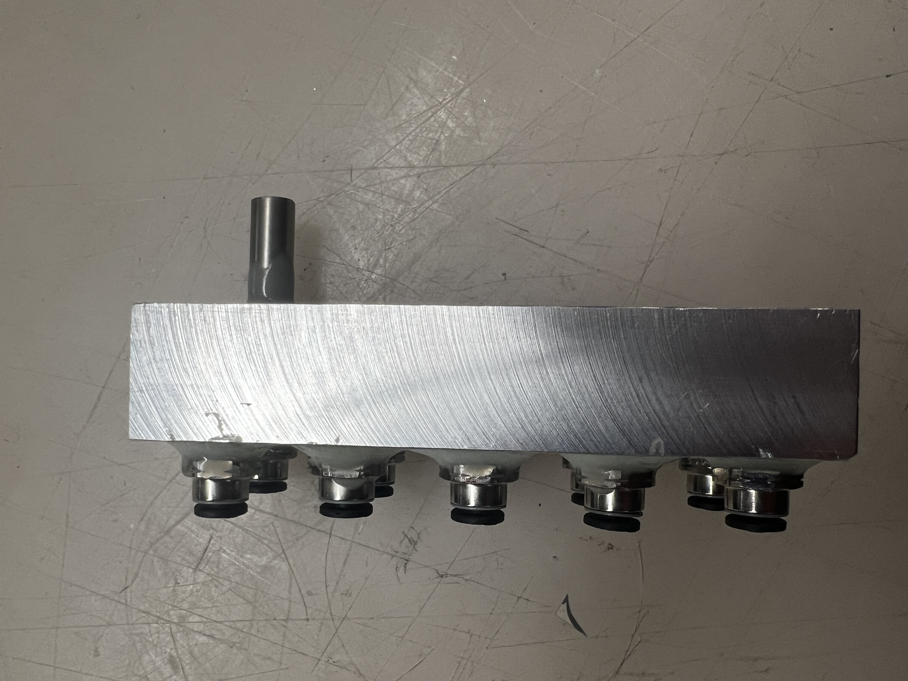

Battery Leak Tester



Overview
Ensuring IPX5-rated battery packs without destruction. I developed a non-destructive leak test for a drone delivery startup, replacing water-based testing with air pressurization. A correlation study linked air leak rate to water ingress, enabling faster, automated detection. The system achieved >99% accuracy in identifying manufacturing defects while cutting test cycle time to 1 minute per pack.
Technical Details
- Testing Requirement: IPX5 water resistance for battery packs
- Testing Method: Non-destructive air pressurization
- Correlation Study: Air leak rate mapped to water ingress
- Leak Characterization: Custom manifold with optical laser pinholes
- Cycle Time: 1 min per pack
- Calibration: Machined aluminum master volume for test equipment
- Test Methods: Pressure decay, wind-blown rain testing
- Automation: MATLAB-based EOL test app
- Detection Accuracy: >99% in identifying manufacturing errors
- Pass/Fail Criteria: Defined acceptable water ingress levels
Development Process
- Correlation Study: Established air-to-water leak rate relationship using precision optical laser pinholes.
- Calibration: Designed and machined an aluminum master volume to validate equipment accuracy.
- Test Execution: Conducted pressure decay and wind-blown rain tests.
- Automation: Developed a MATLAB-based test app for fully automated EOL testing.
- Quality Control: Defined strict pass/fail criteria based on water ingress thresholds.
Results
- Faster Testing - Reduced test cycle time to 1 min per pack.
- Non-Destructive - Eliminated the need for destructive water testing.
- High Accuracy - Achieved >99% defect detection rate.
- Scalable & Repeatable - Standardized testing for consistent quality control.